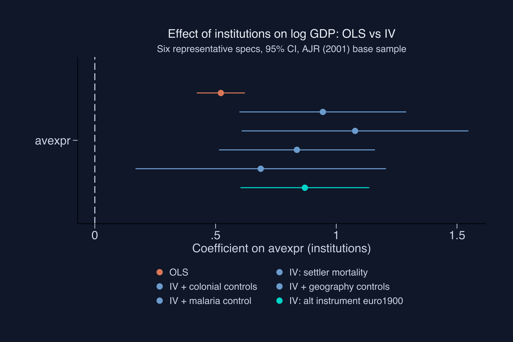
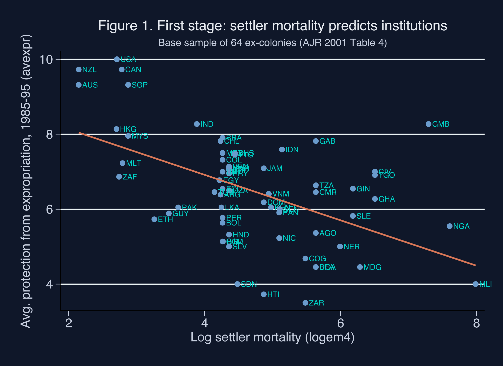
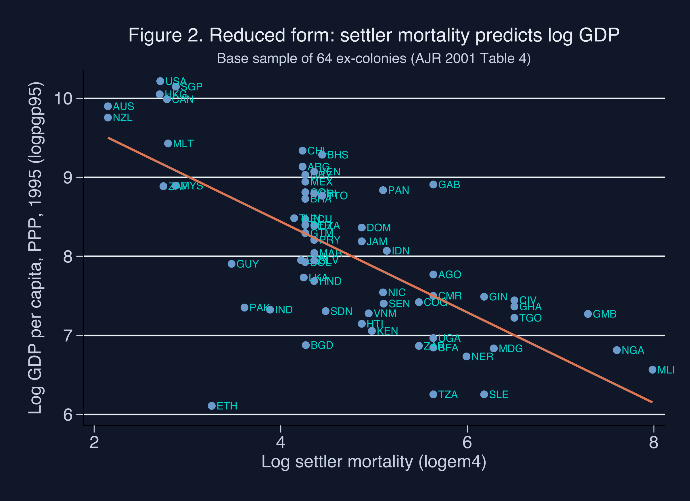

An instrumental-variables tutorial in Stata — replicating Acemoglu, Johnson & Robinson (2001)
Nagoya University (GSID)
July 8, 2026
Act I
Stronger property-rights institutions track vastly higher income across countries. The slope is real and huge.
But correlation is not causation. Maybe rich countries simply afford better courts. Maybe geography or culture drives both. Which way does the arrow point?
Acemoglu, Johnson & Robinson (2001) use European settler mortality during colonization as an instrument for modern institutions.
Tropical, disease-ridden colonies → Europeans died → extractive rule. Temperate, survivable colonies → Europeans settled → property-rights institutions.

Coefficient on institutions across six specs — OLS (orange), four IV variants with settler mortality (steel), IV with an alternative instrument (teal). 95% CIs.
Act II
\[Y_i = \alpha + \beta X_i + U_i, \quad \text{with} \;\; \mathrm{Cov}(X_i, U_i) \neq 0\]
\(Y\) is log GDP, \(X\) is institutional quality, \(U\) collects every unobserved driver of income. The non-zero covariance is exactly what biases OLS.
Settler mortality must shift institutions (we can check) and reach 1995 GDP only through them (we must assume).
\[\hat\beta_{2SLS} = \frac{\widehat{\mathrm{Cov}}(Y, Z)}{\widehat{\mathrm{Cov}}(X, Z)} = \frac{\hat\beta_{RF}}{\hat\beta_{FS}}\]
Stage 1 regresses \(X\) on \(Z\); stage 2 regresses \(Y\) on the predicted \(\hat X\). With one instrument, the IV estimate is just reduced form \(\div\) first stage.
| Sample | \(\hat\beta\) (avexpr) | SE | Sig. 1%? |
|---|---|---|---|
| Full (N=111) | 0.532 | 0.029 | yes |
| Base (N=64) | 0.522 | 0.050 | yes |
| + continents | 0.390 | 0.051 | yes |
This is the number the IV will stress-test — not one it generates.

Modern expropriation protection vs log settler mortality, 64 ex-colonies. Slope \(= -0.607\), \(F = 16.32\), \(R^2 = 0.27\).
| Diagnostic | Value | Threshold |
|---|---|---|
| Kleibergen-Paap rk Wald F | 16.32 | 10 (rule of thumb) |
| Stock-Yogo 10% max IV size | — | 16.38 (iid) |
| Anderson-Rubin Wald (robust) | 61.66 | \(p < 0.0001\) |
Borderline on the conventional threshold; the weak-IV-robust AR test reassures.

Log GDP per capita (1995, PPP) vs log settler mortality, 64 ex-colonies. Slope \(\approx -0.573\).
(avexpr = logem4) declares the endogenous regressor and its instrument; endog() runs the Durbin-Wu-Hausman test.
Act III
0.944
2SLS coefficient on institutions (robust SE 0.176) · 81% larger than OLS · \(z = 5.36\)
| Estimator | \(\hat\beta\) | SE | vs OLS |
|---|---|---|---|
| OLS | 0.522 | 0.050 | — |
| 2SLS | 0.944 | 0.176 | +81% |
Durbin-Wu-Hausman \(\chi^2 = 9.09\) (\(p = 0.003\)) rejects OLS consistency.
No control set drives the coefficient to zero or flips its sign.
Objection. Maybe settler mortality still depresses 1995 income directly — through malaria and disease — violating the exclusion restriction.
Response. Add health controls and the effect dips to 0.55–0.69. But there the first-stage F falls to 1.2–4.9 (weak IV), and Hansen J fails to reject (\(p = 0.46\)–\(0.76\)). The doubt is real; it is the place to keep an open mind.
If the causal effect is 0.944, not 0.522, then institutional reform is about twice as powerful a lever as OLS implies.
Naive policy advice built on OLS slopes systematically understates the returns to building courts, regulators, and parliaments.